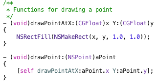
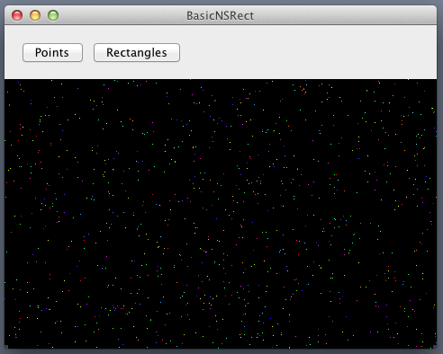
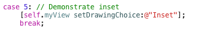

Back to Cocoa Graphics table of contents
First, I am going to draw 1000 points in the view with random location and color.
Create a project with similar steps mentioned in tutorial #2. I named this project BasicNSRect. I also created an empty MyView class and insert one to the window as described in tutorial #2. Revise "MyView.m > drawRect:" so it looks like the following. Notice that we used "bounds" method to get the bounds rectangle of the view and "NSRectFill" method to fill it with the clear color.
Click "Run" and you should see an empty window similar to the following.
Next, I add two functions to "MyView.m" for drawing a point. Notice that we used "NSMakeRect(X, Y, Width, Height)" function to generate a rectangle.

To draw 1000 random points with random colors, I added "drawPoints" function to "MyView.m" so we can call it from "drawRect:". I didn't put the drawing code in "drawRect:" because we are going to draw different things according to the user choice later. In this function, I used "arc4random()" to generate random numbers. Be aware that we need to put "drawPoints" in front of "drawRect:". Otherwise, "drawRect:" can not recognize "drawPoints" function.
You can initialize NSPoint by using an initialization list, assigning the X and Y coordinates individually, or using "NSMakePoint(X, Y)" function. By the way, you can use "BOOL NSEqualPoints ( NSPoint aPoint, NSPoint bPoint )" to test whether two NSPoint objects are equal. In addition, you can use "NSString* NSStringFromPoint ( NSPoint aPoint )" to generate a NSString object containing the coordinates of a NSPoint object and "NSPoint NSPointFromString ( NSString *aString )" to create a NSPoint object from a NSString object.
Next, let's call "drawPoints" from "drawRect:".
Click "Run" and you should see the result similar to the following.
To draw rectangles, we add "drawRectangles" function to "MyView.m" like the following. In addition, we use "NSFrameRectWithWidth" to draw white frames so it is easier to recognize the rectangles.
Revise "drawRect:" function to comment out "drawPoints" and add "drawRectangles".
Click "Run" and you should see the result like the following.
Notice that we drew rectangles with colder colors first. Some of the later added "warmer" rectangles cover some part of the "colder" rectangles.
Next, we are going to modify the UI to include two buttons so the user can choose what to draw.
Click "MainMenu.xib" and select "Window - BasicNRect". Select "MyView" and make it shorter like the following.
Show the object library. Search for "Push Button". Add one to the top of the window. Double click the button and change the title to "Points", like following.
Make sure that "Attributes inspector > Control > Tag" is 0 if it is not.
Add another button and change the title to "Rectangles". Change "Attributes inspector > Control > Tag" to 1.
Add "drawingChoice" property to "MyView.h" like the following.
Revise "MyView.m > drawRect:" so it looks like the following.
Now, we need to create the function that responds to button clicking.
Select "Project navigator > BasicNSRect > MainMenu.xib".
Click "Show the Assistant editor".
Control + Click and drag "Points" button to "AppDelegate.h > AppDelegate". Change "Connection" to "Action". Change "Name" to "setDrawingChoice". Change "Type" to "NSButton". Click "Connect".
The code will look like:
Control + Click and drage "Rectangles" button to "- (IBAction)setDrawingChoice:(NSButton *)sender;" so both buttons can invoke the same function.
In addition, we need to create an outlet to myView. To do this, Control + Click and drag "MyView" to "AppDelegate" interface, similar to the steps just mentioned. Change the "Name" to "myView", "Type" to "MyView", and "Storage" to "weak". Click "Connect". If you followed the steps, you will see an error in the editor. That's because we haven't import "MyView.h". Do this and the code should look similar to the following.
Click "Show the Standard editor".
Select "Project navigator > AppDelegate.m" and you will see the prototype of "setDrawingChoice:". Modiy it so it can handle user choice. Recall that we set the tags for both buttons. We can use the tag to identify which button invokes the function. The other alternative is to identify the button by the title, such as "Points" and "Rectangles" in this example. However, it is not good to tightly couple UI texts to the code. Imaging that one day you need to localize the program or change the button title, your code will not recognize these changes and you will be forced to modify the code. You can imaging that it is not an interesting task. The code should look similar to the following now.
Click "Run" and try to click "Points" and "Rectangles" buttons. The following is the result.
When the program starts...
When the "Points" button is clicked...

When the "Rectangles" button is clicked...
Next, I am going to demonstrate the use of "NSOffsetRect". First, let's add three buttons. They are "Offset", "Intersection", and "Union". "Intersection" and "Union" will be used in later sections. Set tags incrementally, and link them to "- (IBAction)setDrawingChoice:(NSButton *)sender". The UI should look like the following figure.
Next, let's modify "AppDelegate.m > setDrawingChoic:" so it can handle events triggered by new buttons. The following is the updated code.
Let's add "demonstrateOffset" in MyView.m. We use "NSOffsetRect" to create a rectangle by offseting the input rectangle. We also use "NSStringFromRect" to get information about rectangles so we can display the rectangle information in the console.
Finally, we need to revise "drawRect:" so it can draw the two rectangles when a user clicks "Offset" button.
Click "Run" and then click "Offset" button.
The following figure displays the information about the two rectangles in the console.
To generate a rectangle defined by the intersection of two rectangles, we use "NSIntersectionRect". Add "demonstrateIntersection" function in "MyView.m", similar to the following.
Revise "drawRect:" to include "demonstrateIntersection".
Click "Run" and then click "Intersection" button.
To generate a rectangle defined by the union of two rectangles, we use "NSUnionRect" function. Add "demonstrateUnion" function in "MyView.m", similar to the following.
Revise "drawRect:" to include "demonstrateUnion".
Click "Run" and then click "Union" button. The following is the result.
The last rectangle function I want to demonstrate is "NSInsetRect". This function is convenient when you want to create a boarder for a rectangle. Please create one more button titled "Inset" and set the tag to "5". Link it to "setDrawingChoice:". Revise it to include the following case.

Add "demonstrateInset" to "MyView.m".
Revise "drawRect:" to include "demonstrateInset" function.
Click "Run" and then click "Inset" button.
Here is the final zipped project - BasicNSRect.zip
If you see any errors, something not clear, have any comments or suggestions, please contact me at "paynechang@gmail.com". Thanks.